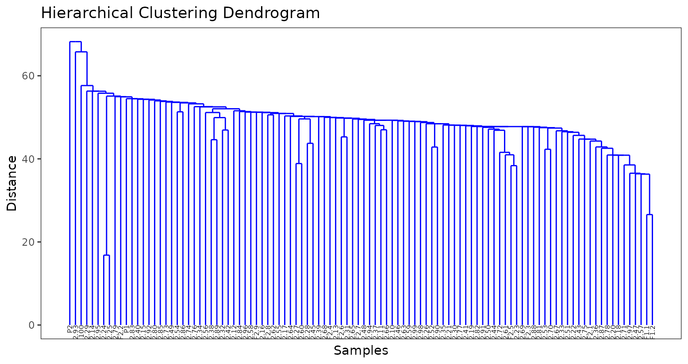
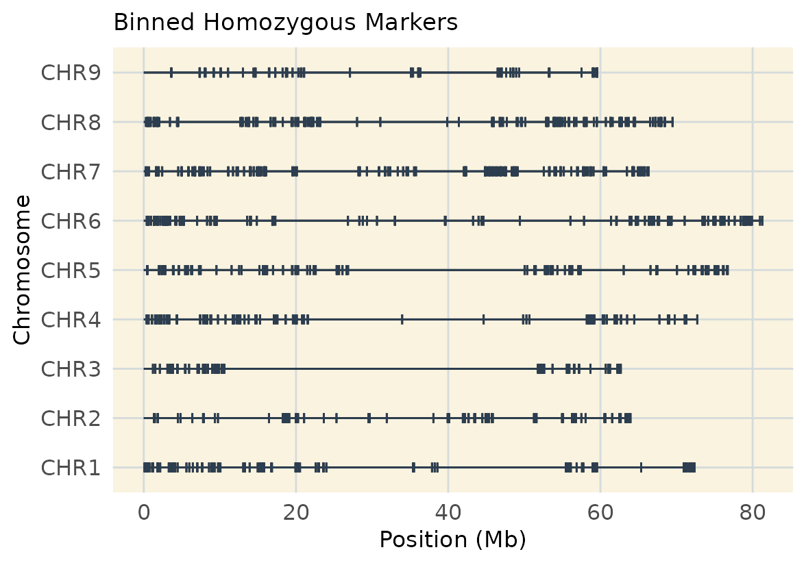
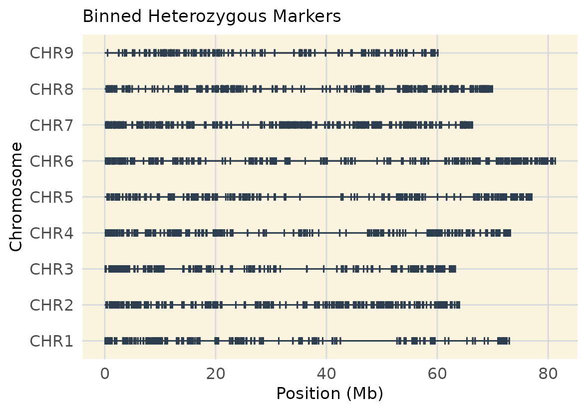

Introduction
This vignette demonstrates how to bin SNP markers based on linkage
disequilibrium (LD) and detect genetic duplicates in a linkage map
F2 table beet population using the geneticMapR
package and its dependencies. Specially useful is MapRtools.
Setup
# Helper function to install from CRAN if not available
load_or_install_cran <- function(pkg) {
if (!requireNamespace(pkg, quietly = TRUE)) {
install.packages(pkg)
}
library(pkg, character.only = TRUE)
}
# Helper function to install from GitHub if not available
load_or_install_github <- function(pkg, repo) {
if (!requireNamespace(pkg, quietly = TRUE)) {
devtools::install_github(repo, quiet = TRUE)
}
library(pkg, character.only = TRUE)
}
# Ensure devtools is available for GitHub installs
load_or_install_cran("devtools")
# Install/load GitHub packages
load_or_install_github("MapRtools", "jendelman/MapRtools")
load_or_install_github("geneticMapR", "vegaalfaro/geneticMapR")
# Install/load CRAN packages
load_or_install_cran("ggdendro")
load_or_install_cran("stringr")
load_or_install_cran("ggplot2")Load Data
We begin by loading a preprocessed genotype dataset from our data repository geneticMapRFiles
geno_matrices_url <- "https://raw.githubusercontent.com/vegaalfaro/geneticMapRFiles/main/R_data/filtered_geno_matrices_1629.RData"
# Download file
if (!file.exists("local_copy.filtered_geno_matrices_1629.RData")) {
download.file(geno_matrices_url,
destfile = "local_copy.filtered_geno_matrices_1629.RData")
}
load("local_copy.filtered_geno_matrices_1629.RData")Identify Genetic Duplicates
It’s often useful to include known duplicates in your dataset to assess GBS quality. Generally it’s good to have a system that allows you to figure out if you inadvertently included a genetic duplicate. In this data, I included a duplicate of the F1 individual. Occasionally, there is human error and some genetic duplicates are included in the experiment inadvertently.
For convenience in the code below, we search for and assign a name to the F1 and parental individuals.
# Assign names
P1 <- "P2550-Cylindra-P1-Theta-A9"
P2 <- "P2493-Mono-P2-Theta-B9"
F1s <- c("7001-F1-Beta-H9", "7002-F1-Gamma-F11") rename_geno_matrix() standardizes the column names of a
genotype matrix by renaming parental genotypes (P1, P2), F1 individuals
(F1.1, F1.2, …), and F2 individuals (F2.1, F2.2, …). This
shortens the names as they are quite large in the real data example and
they get in the way of visualization. We’ll change the names temporarily
for visualization purposes.
# First make copy of geno
geno <- het_phased_geno_1629_filt
# Rename
geno <- rename_geno_matrix(geno, P1, P2, F1s)We will use a dendrogram to determine genetic duplicates. The closer two samples are to the lowest branches of the dedrogram, the more related they are more likely to be duplicates. In this case, we can see the two identical F1s (on the far right hand side) are on the second-lowest branches. In addition, F24 and F25 appear to be even more more closely related and are likely duplicates included in the experiment because of human error. In most projects I have worked on, surprises like this are not uncommon.
# Estimate distance matrix using genotype matrix
distance_matrix <- dist(t(geno))
# Perform hierarchical clustering
hclust_result <- hclust(distance_matrix, method = "single")
# Convert hclust object to dendrogram data for better visualization
dendro_data <- ggdendro::dendro_data(hclust_result)
# Plot dendrogram using ggplot2
dendro <- ggplot() +
geom_segment(data = dendro_data$segments,
aes(x = x, y = y, xend = xend, yend = yend),
color = "blue") +
geom_text(data = dendro_data$labels,
aes(x = x, y = y, label = label),
hjust = 1, angle = 90, size = 2) +
labs(title = "Hierarchical Clustering Dendrogram",
x = "Samples", y = "Distance") +
theme_test() +
theme(axis.text.x = element_blank(), axis.ticks.x = element_blank())
dendro
Filter Parents and F1 from the Dataset
To avoid bias during LD binning, we remove the parents
and F1 individuals. We’ll keep the two F2s which
seem to be genetic duplicates for now.
hom_phased_geno_1629 <- drop_parents(hom_phased_geno_1629, P1, P2, F1 = F1s)
het_phased_geno_1629_filt <- drop_parents(het_phased_geno_1629_filt, P1, P2, F1 = F1s)Bin Homozygous Markers
We begin by cleaning the homozygous matrix and removing non-informative markers.
# Identify monomorphic markers
mono_markers <- apply(hom_phased_geno_1629, 1, function(x) length(unique(na.omit(x))) == 1)
# Identify zero variance markers
hom_phased_geno_1629 <- hom_phased_geno_1629[apply(hom_phased_geno_1629, 1, var) > 0, ]
# Filter them out from matrix
hom_phased_geno_1629 <- hom_phased_geno_1629[!mono_markers, ]
# If genotype matrix contains missing genotypes, remove them
hom_phased_geno_1629 <- hom_phased_geno_1629[complete.cases(hom_phased_geno_1629), ]
# bin markers using MapRtools::LDbin
LDbin_hom <- LDbin(hom_phased_geno_1629, r2.thresh = 0.99)
# Extract binned genotype matrix
geno.hom.bin <- LDbin_hom$geno
# Check dimensions of binned genotype
dim(geno.hom.bin)
#> [1] 998 100Visualize Binned Homozygous Markers
map_hom <- extract_map(geno.hom.bin)
plot_coverage(map = map_hom, customize = TRUE) +
ggtitle("Binned Homozygous Markers")
Bin Heterozygous Markers
We now repeat the binning process for heterozygous markers.
LDbin_het <- LDbin(het_phased_geno_1629_filt, r2.thresh = 0.99)
geno.het.bin <- LDbin_het$geno
dim(geno.het.bin)
#> [1] 2480 100Visualize Binned Heterozygous Markers
map_het <- extract_map(geno.het.bin)
plot_coverage(map = map_het, customize = TRUE) +
ggtitle("Binned Heterozygous Markers")
Mrker Filtering Tradeoff
This real-data example shows once more how filtering for homozygous vs. heterozygous markers affects genome coverage. The balance between marker type and map resolution.
Save Results
save(geno.het.bin,
geno.hom.bin,
dendro,
file = "processed_data/R_data/binned_geno_1629.RData")Conclusion
This vignette illustrates how to identify duplicate individuals in your dataset and perform LD-based marker binning using tools available in the geneticMapR workflow.
Session Information
sessionInfo()
#> R version 4.5.0 (2025-04-11)
#> Platform: x86_64-pc-linux-gnu
#> Running under: Ubuntu 24.04.2 LTS
#>
#> Matrix products: default
#> BLAS: /usr/lib/x86_64-linux-gnu/openblas-pthread/libblas.so.3
#> LAPACK: /usr/lib/x86_64-linux-gnu/openblas-pthread/libopenblasp-r0.3.26.so; LAPACK version 3.12.0
#>
#> locale:
#> [1] LC_CTYPE=C.UTF-8 LC_NUMERIC=C LC_TIME=C.UTF-8
#> [4] LC_COLLATE=C.UTF-8 LC_MONETARY=C.UTF-8 LC_MESSAGES=C.UTF-8
#> [7] LC_PAPER=C.UTF-8 LC_NAME=C LC_ADDRESS=C
#> [10] LC_TELEPHONE=C LC_MEASUREMENT=C.UTF-8 LC_IDENTIFICATION=C
#>
#> time zone: UTC
#> tzcode source: system (glibc)
#>
#> attached base packages:
#> [1] stats graphics grDevices utils datasets methods base
#>
#> other attached packages:
#> [1] ggplot2_3.5.2 stringr_1.5.1 ggdendro_0.2.0
#> [4] geneticMapR_0.0.0.9000 MapRtools_0.36 devtools_2.4.5
#> [7] usethis_3.1.0
#>
#> loaded via a namespace (and not attached):
#> [1] tidyselect_1.2.1 Rmpfr_1.1-0 dplyr_1.1.4
#> [4] farver_2.1.2 fastmap_1.2.0 TSP_1.2-4
#> [7] promises_1.3.2 digest_0.6.37 mime_0.13
#> [10] lifecycle_1.0.4 ellipsis_0.3.2 magrittr_2.0.3
#> [13] compiler_4.5.0 rlang_1.1.6 sass_0.4.10
#> [16] tools_4.5.0 yaml_2.3.10 knitr_1.50
#> [19] ggsignif_0.6.4 labeling_0.4.3 htmlwidgets_1.6.4
#> [22] bit_4.6.0 pkgbuild_1.4.8 RColorBrewer_1.1-3
#> [25] pkgload_1.4.0 abind_1.4-8 miniUI_0.1.2
#> [28] registry_0.5-1 ca_0.71.1 withr_3.0.2
#> [31] purrr_1.0.4 desc_1.4.3 grid_4.5.0
#> [34] urlchecker_1.0.1 ggpubr_0.6.0 profvis_0.4.0
#> [37] xtable_1.8-4 MASS_7.3-65 scales_1.4.0
#> [40] iterators_1.0.14 cli_3.6.5 rmarkdown_2.29
#> [43] ragg_1.4.0 generics_0.1.4 remotes_2.5.0
#> [46] CVXR_1.0-15 sessioninfo_1.2.3 cachem_1.1.0
#> [49] splines_4.5.0 parallel_4.5.0 scam_1.2-18
#> [52] vctrs_0.6.5 Matrix_1.7-3 jsonlite_2.0.0
#> [55] HMM_1.0.2 carData_3.0-5 car_3.1-3
#> [58] seriation_1.5.7 bit64_4.6.0-1 rstatix_0.7.2
#> [61] Formula_1.2-5 systemfonts_1.2.3 ggdist_3.3.3
#> [64] foreach_1.5.2 jquerylib_0.1.4 tidyr_1.3.1
#> [67] glue_1.8.0 pkgdown_2.1.3 codetools_0.2-20
#> [70] distributional_0.5.0 stringi_1.8.7 gtable_0.3.6
#> [73] later_1.4.2 gmp_0.7-5 tibble_3.2.1
#> [76] pillar_1.10.2 splines2_0.5.4 htmltools_0.5.8.1
#> [79] R6_2.6.1 textshaping_1.0.1 evaluate_1.0.3
#> [82] shiny_1.10.0 lattice_0.22-6 backports_1.5.0
#> [85] memoise_2.0.1 broom_1.0.8 httpuv_1.6.16
#> [88] bslib_0.9.0 Rcpp_1.0.14 nlme_3.1-168
#> [91] mgcv_1.9-1 xfun_0.52 fs_1.6.6
#> [94] pkgconfig_2.0.3